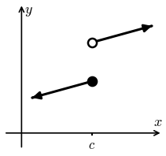
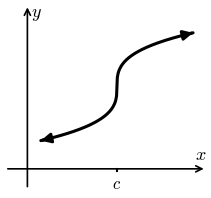
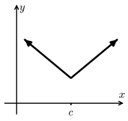

Lesson 13: Differentiability
The forms below all say the same thing. The second emphasizes the slope at \(x = a\).
We use \(dx\) to represent \(\Delta x\), and \(dy\) to represent \(\Delta y\), in the limit as \(\Delta x\) goes to zero.
When the limit definition of the derivative exists at \(x = c\), we say the function is differentiable there. Below are three ways a function can fail to be differentiable at \(x = c\).
1. It is not continuous.

2. It has a vertical tangent line, which has an undefined slope.

3. It has a corner.

Very Important
A function can be continuous but not differentiable, like the corner. But if a function is differentiable, then it is continuous.
Show that \(f(x) = |x|\) is not differentiable at \(x = 0\).
Use the third form of the limit definition with \(c = 0\).
The left-hand and right-hand limits are different, so the derivative does not exist at \(x = 0\). The graph has a corner there.